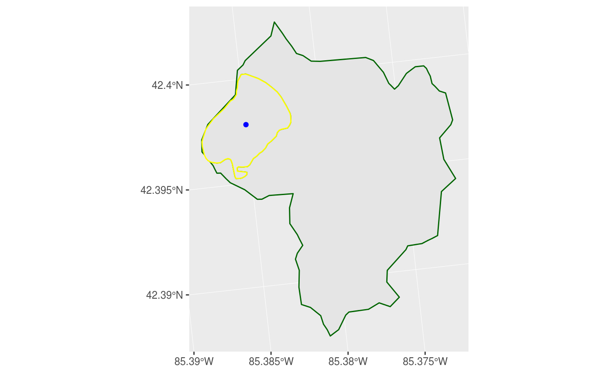

vignettes/using-lagosnegis.Rmd
using-lagosnegis.Rmdlibrary(LAGOSNEgis)
library(sf)
library(ggplot2)
res_iws <- query_gis("IWS", "lagoslakeid", c(34352))
res_lake <- query_gis("LAGOS_NE_All_Lakes_4ha", "lagoslakeid", 34352)
res_pnt <- query_gis("LAGOS_NE_All_Lakes_4ha_POINTS", "lagoslakeid", 34352)
ggplot() +
geom_sf(data = res_iws, color = "darkgreen") +
geom_sf(data = res_lake, color = "yellow") +
geom_sf(data = res_pnt, color = "blue")